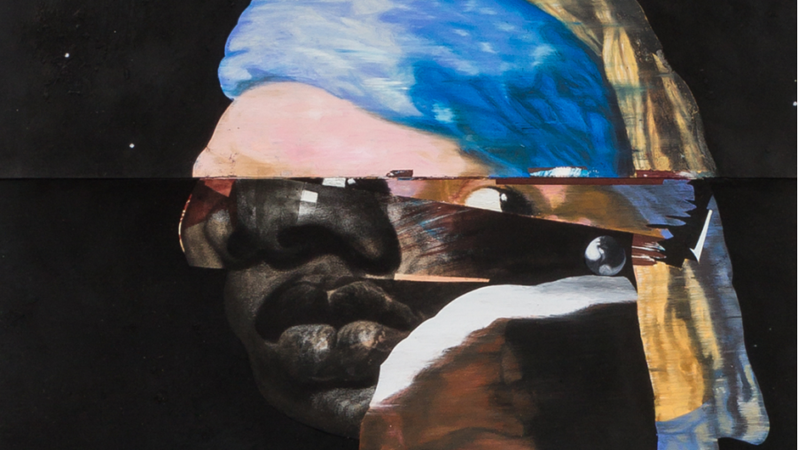

Nathaniel Mary Quinn: A Love Letter to My Mother
Nathaniel Mary Quinn’s first solo museum show in Chicago explores the artist’s formative years growing up in public housing, which he describes as “my first studio.” Alongside works on canvas and paper at the new National Public Housing Museum, the exhibition includes a Robert Taylor Homes living room designed from memory to conjure the artist’s family apartment circa 1984.
Opening Reception and Artist Talk
Thursday, May 21, 5–8 pm
Join Nathaniel Mary Quinn for an artist talk and neighborhood party to celebrate the opening of his new exhibition at the National Public Housing Museum. Enjoy fried chicken, cornbread, and greens—the artist’s favorite childhood family meal growing up in Robert Taylor Homes—plus music and more during this community block party. The opening features a conversation at 5:30 pm between the artist and Robert Smith III.